Guide utilisateur de Simuline
1. Présentation générale
Simuline est un moteur permettant de concevoir et de jouer à des jeux sérieux (serious games). Il propose un éditeur visuel dans lequel l’auteur du jeu définit les scènes, les modalités de réponse et les mécanismes de progression du scénario.
Ce guide présente les principales fonctionnalités de l’éditeur et décrit la configuration des différents éléments qui composent un jeu.
2. Édition d’un jeu
2.1. Principes de fonctionnement
Dans Simuline, les éléments d’un jeu sont représentés par des boîtes reliées entre elles. Il existe trois catégories de boîtes :
- Boîtes de question : elles définissent les scènes présentées au joueur. Actuellement, la scène est le seul type de boîte de question disponible.
- Boîtes de réponse : elles définissent les modalités de réponse proposées au joueur et les conséquences associées à ses choix.
- Boîtes de supplément : elles permettent d’ajouter des fonctionnalités ou de modifier le comportement des boîtes de question ou de réponse auxquelles elles sont associées.
Le menu de sélection du type de boîte s'affiche via un clic droit dans l'interface.
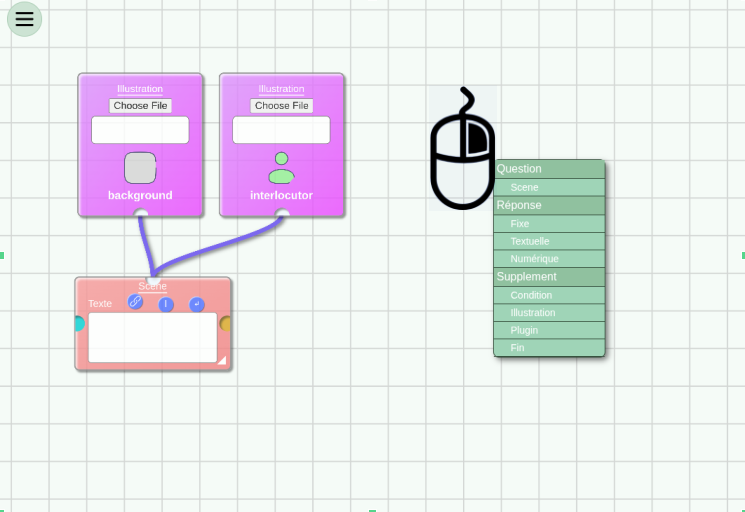
Un jeu Simuline se compose d’un ensemble de scènes. Chaque scène présente au joueur une question, un dialogue ou un contexte. Selon les modalités définies par l’auteur, le joueur peut fournir une réponse qui détermine la suite du scénario.
En fonction de la réponse fournie et des connexions configurées dans l’éditeur, le joueur peut accéder à une nouvelle scène, revenir à une scène précédente ou rejouer la scène en cours.
Organisation des connexions
Les connexions entre les boîtes déterminent la structure et le déroulement du jeu :
- Les connexions entre une boîte de question et ses boîtes de réponse définissent les modalités de réponse associées à une scène.
- Les connexions entre les boîtes de réponse et les boîtes de question suivantes déterminent la progression du joueur dans le scénario.
Les connexions doivent donc être configurées de manière à représenter le déroulement souhaité du jeu.
| Éditeur | Jeu en cours |
|---|---|
|
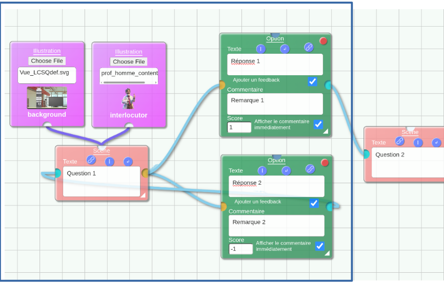 |
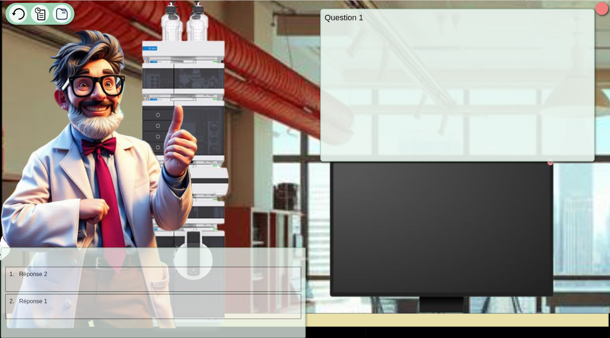 |
Fin du scénario
Pour valider un scénario, celui-ci doit obligatoirement finir par une boîte de fin. La boîte de fin marque la fin du jeu et l'affichage du score et du bilan du joueur.
2.2 Difficultés d'édition courantes
En cas d'impossibilité à enregistrer le scénario, voici quelques éléments à vérifier:
- Un scénario doit obligatoirement finir par une boîte de fin. Sans boîte de fin connectée à au mons un chemin dans le scénario, le scénario ne pourra pas être sauvegardé.
- Toutes les boîtes de question et réponse doivent être connectées. L'absence d'une de ces connections mènerait à une incohérence dans le scénario. Le programme ne permettra pas de sauvegarder un scénario avec des branches inconsistantes.
-
3. Configuration des questions
3.1. Scène
La boîte Scène définit l’écran principal présenté au joueur. Elle permet notamment de configurer :
- le texte de la question, du dialogue ou du contexte ;
- l’image d’arrière-plan ;
- l’image de l’interlocuteur ;
- les illustrations complémentaires éventuellement présentées avant la scène.
Le texte configuré dans la boîte correspond au contenu affiché dans la partie supérieure gauche de l’écran de jeu.
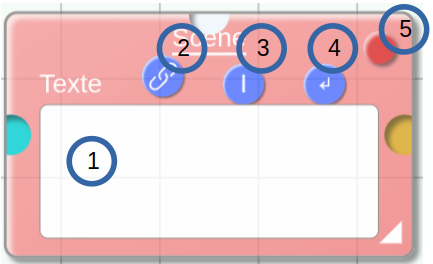
Les commandes de l’éditeur de texte sont les suivantes :
- Texte de la scène : permet de saisir ou de modifier le texte présenté au joueur.
- Insertion d’un lien : permet d’ajouter un lien vers un site externe dans le texte.
- Mise en italique : permet de mettre en italique le texte sélectionné.
- Saut de ligne : permet d’insérer un retour à la ligne.
- Suppression de la boîte : permet de supprimer la boîte de scène.
Une boîte de scène peut être associée à deux types de boîtes de supplément : les boîtes d’illustration et les boîtes de plugin.
3.2. Illustrations
Les boîtes d’illustration permettent d’associer des images à une scène. Trois types d’illustrations sont disponibles :
- Background : définit l’image d’arrière-plan de la scène, par exemple une officine ou un laboratoire.
- Interlocutor : définit l’image de l’interlocuteur présenté au joueur, par exemple un patient ou un enseignant.
- Additional : définit une illustration complémentaire affichée avant la scène. Ce type peut notamment être utilisé pour présenter une ordonnance, un spectre ou une photographie.
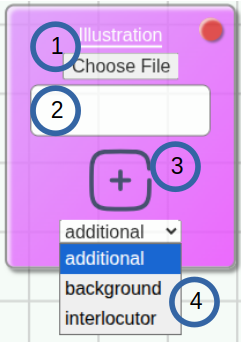
La boîte d’illustration comporte les éléments suivants :
- Sélection du fichier : permet de choisir le fichier image à utiliser.
- Nom du fichier : indique le nom du fichier sélectionné.
- Prévisualisation : affiche un aperçu de l’image choisie.
- Type d’illustration : permet de sélectionner la catégorie de l’illustration (Background, Interlocutor ou Additional).
3.3. Plugins
Les boîtes de plugin permettent d’ajouter des fonctionnalités complémentaires au jeu.
Actuellement, le seul plugin disponible est le plugin Computer. Celui-ci ajoute un ordinateur en bas de l’écran de jeu. Lorsque le joueur clique sur cet ordinateur, il peut accéder à l’un des outils proposés :
- un simulateur de microscope ;
- PharmaSoft, un simulateur de logiciel officinal.
L’option Remove plugin permet de retirer le plugin des scènes suivantes.
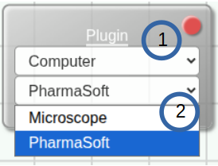
4. Configuration des réponses
Les boîtes de réponse définissent les modalités selon lesquelles le joueur peut répondre à une question. Elles permettent également de configurer les scores attribués et les commentaires présentés en fonction du résultat.
Simuline propose trois types de réponses :
- Réponse fixe : correspond à un choix prédéfini par l’auteur. Elle est notamment utilisée pour créer des questions à choix multiples (QCM).
- Réponse numérique : attend une valeur numérique, qui peut être exacte ou comprise dans un intervalle défini.
- Réponse textuelle : attend une réponse saisie sous forme de texte.
4.1. Réponse fixe
Une boîte de réponse fixe correspond à un choix proposé au joueur dans une question à choix multiples.
Une scène peut être associée à plusieurs réponses fixes, ou à une seule. L’ordre d’affichage des réponses dépend actuellement de leur ordre de création : la première réponse créée est la première affichée. Il n’est pas possible de modifier directement cet ordre dans l’éditeur.
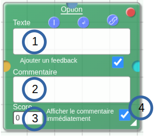
Les paramètres disponibles sont les suivants :
- Texte de la réponse : définit le libellé du choix proposé au joueur.
- Commentaire de feedback : définit le commentaire associé à cette réponse.
- Score : définit le nombre de points attribués à la réponse. Le score peut être positif ou négatif.
- Affichage immédiat du feedback : lorsque cette option est activée, le commentaire est affiché immédiatement après la sélection de la réponse. Dans le cas contraire, il est présenté uniquement lors du bilan de fin de jeu.
4.2. Réponse textuelle
Une boîte de réponse textuelle permet de demander au joueur de saisir une réponse sous forme de texte. Elle convient notamment aux questions portant sur un concept, le nom d’un médicament ou toute autre réponse exprimable par un texte.
La configuration permet de définir la réponse attendue et les règles de comparaison utilisées pour déterminer si la réponse du joueur est correcte. Selon le paramétrage de la sensibilité à la casse, les différences de majuscules et de minuscules peuvent être prises en compte ou ignorées.
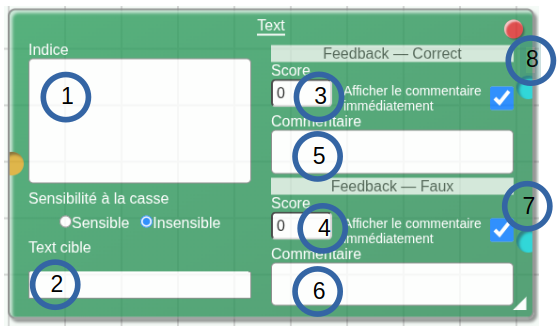
Les paramètres disponibles sont les suivants :
- Indication : fournit des instructions au joueur sur le format attendu. Par exemple : « Répondez en un seul mot, sans déterminant. Attention à l’orthographe. »
- Réponse attendue : définit le texte de référence utilisé pour évaluer la réponse. Le paramètre de sensibilité à la casse détermine si les différences de majuscules et de minuscules sont prises en compte. Les autres règles de comparaison dépendent du comportement de l’éditeur.
- Score en cas de réponse correcte : définit le nombre de points attribués lorsque la réponse est correcte.
- Score en cas de réponse incorrecte : définit le nombre de points attribués lorsque la réponse est incorrecte.
- Commentaire en cas de réponse correcte : définit le feedback associé à une réponse correcte.
- Commentaire en cas de réponse incorrecte : définit le feedback associé à une réponse incorrecte.
- Affichage immédiat du feedback en cas de réponse correcte : lorsque cette option est activée, le commentaire correspondant est affiché immédiatement après une réponse correcte. Sinon, il est présenté uniquement lors du bilan de fin de jeu.
- Affichage immédiat du feedback en cas de réponse incorrecte : lorsque cette option est activée, le commentaire correspondant est affiché immédiatement après une réponse incorrecte. Sinon, il est présenté uniquement lors du bilan de fin de jeu.
4.3. Réponse numérique
Une boîte de réponse numérique permet au joueur de saisir une valeur numérique. Les nombres entiers et décimaux, positifs ou négatifs, sont pris en charge.
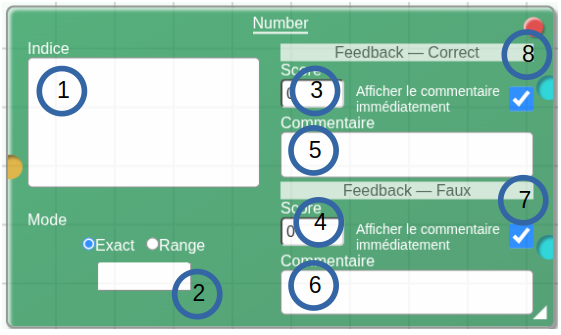
Les paramètres disponibles sont les suivants :
- Indication : précise le format ou l’unité attendue pour la réponse. Par exemple : « Donnez votre réponse en mg/ml. »
- Réponse attendue et mode de comparaison : définit la valeur de référence et la méthode utilisée pour évaluer la réponse :
- Exact : la valeur saisie doit correspondre exactement à la valeur attendue.
- Range : la valeur saisie doit appartenir à l’intervalle défini.
- Score en cas de réponse correcte : définit le nombre de points attribués lorsque la réponse est correcte.
- Score en cas de réponse incorrecte : définit le nombre de points attribués lorsque la réponse est incorrecte.
- Commentaire en cas de réponse correcte : définit le feedback associé à une réponse correcte.
- Commentaire en cas de réponse incorrecte : définit le feedback associé à une réponse incorrecte.
- Affichage immédiat du feedback en cas de réponse correcte : lorsque cette option est activée, le commentaire correspondant est affiché immédiatement après une réponse correcte. Sinon, il est présenté uniquement lors du bilan de fin de jeu.
- Affichage immédiat du feedback en cas de réponse incorrecte : lorsque cette option est activée, le commentaire correspondant est affiché immédiatement après une réponse incorrecte. Sinon, il est présenté uniquement lors du bilan de fin de jeu.
5. Conditions d’affichage des réponses
5.1. Principe général
Les boîtes de réponse peuvent être associées à des boîtes de condition. Ces dernières permettent de contrôler l’affichage d’une réponse en fonction d’une action effectuée par le joueur ou d’une condition remplie au cours du scénario.
Actuellement, le principal cas d’utilisation disponible concerne l’affichage conditionnel d’une réponse en fonction de la consultation du dossier d’un patient dans PharmaSoft.
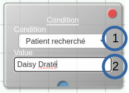
5.2. Paramétrage d’une condition
Les paramètres disponibles sont les suivants :
- Type de condition : définit la condition à vérifier. Actuellement, la seule option fonctionnelle est Patient recherché.
- Valeur associée à la condition : précise la valeur à vérifier pour satisfaire la condition.
Par exemple, si la valeur configurée est « Daisy Draté », la réponse associée à cette condition ne sera affichée que lorsque le joueur aura consulté le dossier du patient correspondant dans PharmaSoft.
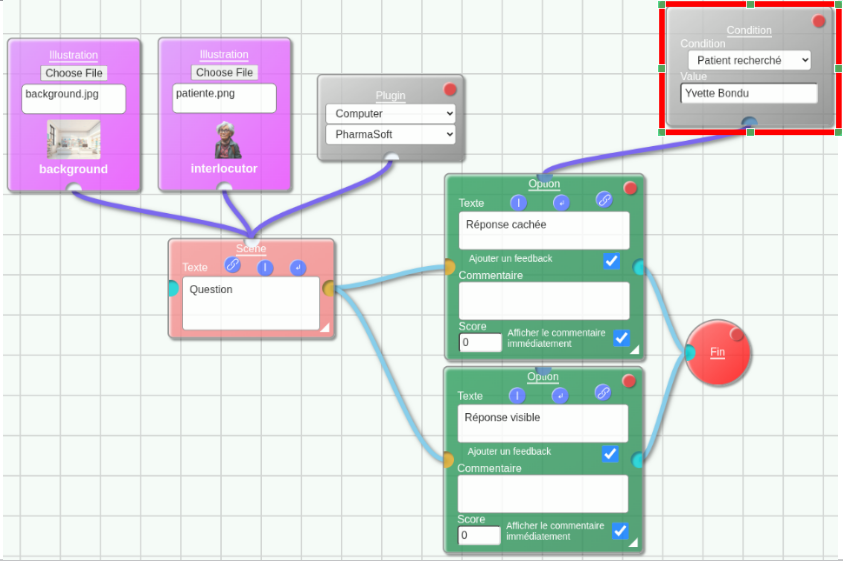
|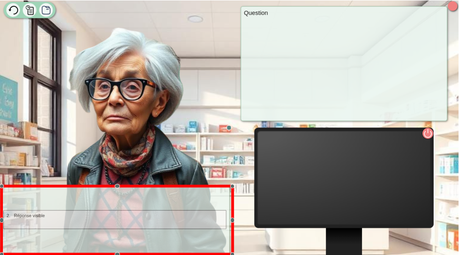
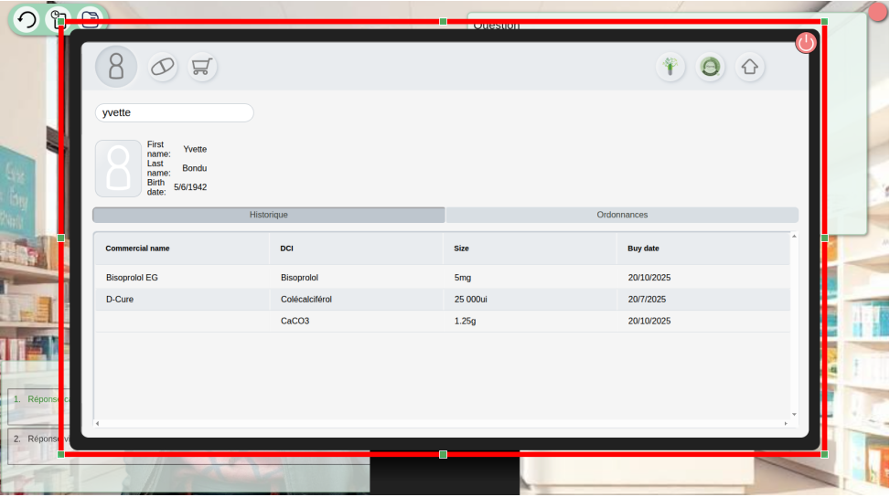
|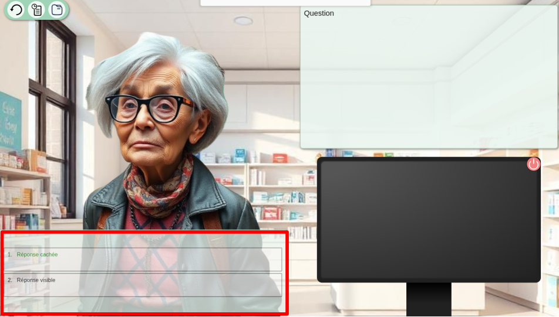